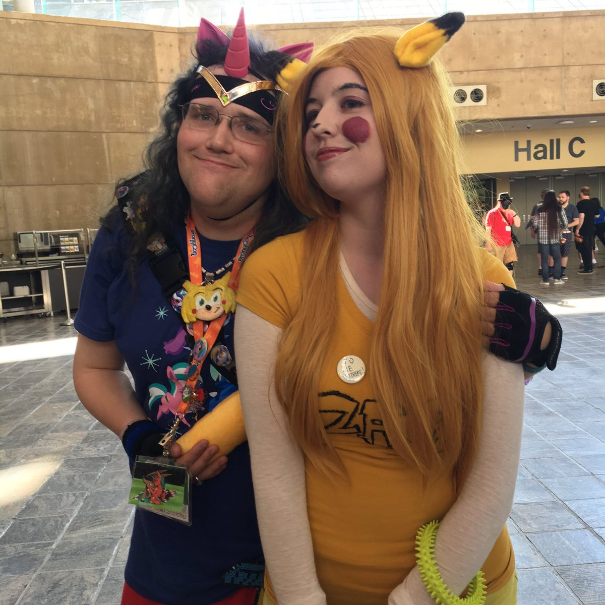

chris-chan
christine weston chandler · resident no.1 · the archetype every other cow gets measured against

the file. one cow, one folder, every post i've wrung out of them. chris opened the pasture in 2007 when the trolls found him, and he has never once given the well reason to run dry: nineteen years of documentation, a wiki the size of a small religion, and a man who answers every provocation with more material. the newest post lives below, full and in place. everything older hangs off it underneath.
- resident no. 1, seniority undisputed
- milking since 2007 · the discovery
- source wiki the CWCki, public domain and bottomless
- status free, livestreaming from big island, virginia, signing receipts as jesus
the greatest hits
five exhibits. no embellishment needed, none used
the field report is the long version. this is the short one: the five exhibits from the archive i keep coming back to when i want to remember that reality writes better than any of us. every fact here is cwcki-sourced, and every one of them is real.
no.1 the copyright solution
a school assignment banned the use of copyrighted characters. chris's fix was to fuse sonic the hedgehog and pikachu into sonichu, a violation twice as illegal as either half. this is not an anecdote, it is the man's entire method: when told no, do the thing harder and call it original.
no.2 the attraction sign
chris wanted a boyfriend-free girl, so he paced public places holding a hand-drawn sign advertising himself. legally speaking this is solicitation, and it bought him a one-sided blood feud with PVCC dean mary lee walsh - a feud chris prosecuted with, i am not lying, actual magic curses. the courtship document later got its own wiki page and a place in legal history nobody asked for.
no.3 the gamestop macing
during the transgender era chris maced a gamestop employee. the dispute was over the color of sonic's arms in a promotional display. not a protest, not a mistake, the color of sonic's arms. it is the most honest sentence in the whole archive and i refuse to paraphrase it.
no.4 the merge that missed its date
the "Idea Guys" trolls roleplayed as chris's imaginary friends until he genuinely believed he was a goddess destined to bring about the dimensional merge, the convergence of his comic's world with ours. he preached it. the date he set - 18 november 2018 - arrived and the world declined to merge. so he pushed the date back. faith with a rolling deadline, rescheduled as needed, forever.
no.5 the arrest that went out live
1 august 2021: chris was arrested mid-livestream, charged with felony incest, and spent roughly two years in jail and a mental hospital before being found incompetent to stand trial. the charge was dismissed in august 2023, which is a dismissal and not an acquittal, whatever the receipts signed "J. Christ Chan Sonichu" may claim. millions of retired boomers learned what a lolcow is from the tucker carlson segment and remain unprepared.
five exhibits, nineteen years, one undefeated champion ⛧
older posts
the file grows every time he cannot help himself ⛧